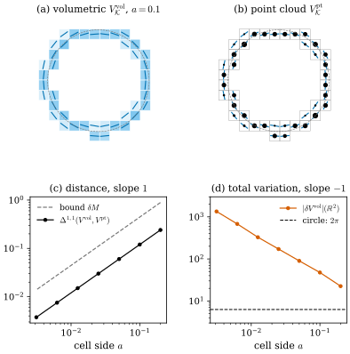

47.2 Varifolds and Discrete Varifolds
Goals
- 논문 §2.1의 정의들이 Chapter 46의 어느 정의와 같은지 알고, Chapter 46에 없던 국소 거리 \(\Delta^{1,1}_U\)를 정확히 쓸 수 있다.
- mesh, volumetric varifold, polyhedral varifold를 정의하고, 같은 cell 데이터에서 volumetric과 point cloud 표현이 얼마나 다른지(Proposition 2.13)를 증명할 수 있다.
- discrete varifold의 first variation이 왜 쓸 수 없는 대상인지 두 경우로 설명할 수 있다. point cloud에서는 measure가 아니고, volumetric에서는 measure이지만 cell이 작아지면 total variation이 \(1/a\)로 커진다.
Prerequisites
- Section 47.1: 이 장의 기호(Conventions 상자)
- Section 46.4: varifold, mass, rectifiable varifold, Young measure, 수렴
- Section 46.5: first variation, generalized mean curvature, polygon의 first variation(Example 46.5.6)
- Section 46.7: bounded Lipschitz distance(Definition 46.7.6)
Motivation
Section 47.1의 (47.1.1)은 아무 varifold에나 쓸 수 있다. 그런데 실제 데이터는 어떤 varifold인가? 3D scanner의 point cloud, CT의 voxel, modeling 도구의 triangle mesh는 모두 유한 개의 숫자로 정해지는 varifold다. 논문 §2는 이것들을 discrete varifold라는 이름으로 모으고, 두 가지를 확인한다. 같은 데이터를 voxel로 쓰든 점으로 쓰든 varifold로서는 cell 크기만큼만 다르다는 것, 그리고 어느 쪽이든 first variation을 그대로는 쓸 수 없다는 것이다. 두 번째 사실이 Section 47.3의 regularization이 필요한 이유다.
Classical Definitions (Section 2.1)
논문 §2.1은 고전적인 정의를 모은다. 이 study set에서는 모두 Chapter 46에서 정의했으므로 대응표로 정리하고, Chapter 46에 없는 것과 논문이 덧붙인 말만 따로 쓴다.
| [BLM17] | 내용 | 이 study set |
|---|---|---|
| Def 2.1 | \(d\)-varifold: \(\Omega \times G_{d,n}\) 위의 Radon measure | Definition 46.4.1 |
| Def 2.2 | rectifiable varifold \(v(M, \theta)\), integral varifold | Definition 46.4.4 |
| Def 2.3 | mass \(\norm{V}(B) = V(\pi^{-1}(B))\) | Definition 46.4.2 |
| Prop 2.4 | Young measure 표현 \(V = \norm{V} \otimes \{\nu_x\}_x\) | Proposition 46.4.7 |
| Def 2.5 | varifold의 weak-* 수렴 | Definition 46.4.8 |
| Def 2.6 | bounded Lipschitz distance \(\Delta^{1,1}\) | Definition 46.7.6 |
| Def 2.7 | 국소판 \(\Delta^{1,1}_U(V, W)\), \(\Delta^{1,1}_U(\norm{V}, \norm{W})\) | Definition 47.2.1 |
| Prop 2.8 | mass bounded, compact support이면 \(\Delta^{1,1} \to 0 \iff\) weak-* 수렴 | Proposition 46.7.7 |
| (정의, 번호 없음) | tangential divergence \(\divg_PX = \sum_j\inner{P\nabla X_j}{e_j}\) | Definition 46.3.5 |
| Def 2.9 | first variation \(\delta V(X) = \int\divg_PX\,dV\) | Definition 46.5.1 |
| Remark 2.10, (2.1) | 스칼라 \(\varphi\)에 대한 \(\delta V(\varphi)\), Lipschitz \(X\), 넓이의 변화율, bounded first variation, \(\delta V = -\vec H\norm{V} + \delta V_s\) | Remark 47.2.2, Proposition 46.5.2, Definition 46.5.4 |
Definition 47.2.1 (localized bounded Lipschitz distance). \(\Omega \subset \R^n\)이 open set이고 \(V\), \(W\)가 \(\Omega\) 위의 \(d\)-varifold라 하자. open set \(U \subset \Omega\)에 대해 \[ \begin{aligned} \Delta^{1,1}_U(V, W) &= \sup_\varphi\Big|\int\varphi\,dV - \int\varphi\,dW\Big|, \\ \Delta^{1,1}_U(\norm{V}, \norm{W}) &= \sup_\psi\Big|\int\psi\,d\norm{V} - \int\psi\,d\norm{W}\Big| \end{aligned} \] 로 정한다. 첫째 sup은 \(\varphi \in \mathrm{Lip}_1(\Omega \times G_{d,n})\), \(\norm{\varphi}_\infty \le 1\), \(\supp\varphi \subset U \times G_{d,n}\)인 \(\varphi\) 전체, 둘째 sup은 \(\psi \in \mathrm{Lip}_1(\Omega)\), \(\norm{\psi}_\infty \le 1\), \(\supp\psi \subset U\)인 \(\psi\) 전체에 대해 잡는다. \(U = \Omega\)이면 아래첨자를 생략한다. [BLM17, Def 2.7]
\(\Delta^{1,1}_U\)는 \(U\) 밖에서 \(0\)인 test function만 쓰므로 “\(U\) 안에서 두 varifold가 얼마나 다른가”를 잰다. 수렴 정리(Section 47.4)는 점 \(x\) 근처의 ball \(U = B_{\varepsilon}(x)\)에서의 거리만 가정하므로 이 국소판이 필요하다. 첫 식의 \(\mathrm{Lip}_1(\Omega \times G_{d,n})\)은 거리 \(\abs{x - y} + \norm{P - S}\)에 대한 것이다(Section 47.1의 Conventions 상자).
Remark 47.2.2 (what the paper adds to the first variation). 논문의 Remark 2.10은 Section 46.5의 내용에 네 가지를 붙인다. [BLM17, Remark 2.10]
- 스칼라 함수 \(\varphi \in C^1_c(\Omega)\)에는 \(\delta V(\varphi) = \big(\delta V(\varphi e_1), \dots, \delta V(\varphi e_n)\big) \in \R^n\)으로 쓴다. 성분마다 계산하면 \(\delta V(\varphi) = \int S\nabla\varphi(x)\,dV(x, S)\)이다. 이 장의 regularized first variation과 approximate mean curvature는 모두 이 꼴로 쓴다.
- \(X\)가 Lipschitz일 뿐이어도, 미분할 수 없는 점의 집합이 \(\norm{V}\)-null이면 \(\delta V(X)\)는 같은 식으로 정의된다. Section 47.6에서 mesh의 hat function을 넣을 때 이것을 쓴다.
- \(X\)의 flow \(\varphi_t\)로 varifold를 움직이면 \(\delta V(X) = \tfrac{d}{dt}\norm{V_t}(A)|_{t=0}\)이다(Proposition 46.5.2).
- \(\delta V\)는 \(C^1\) topology에서 연속이지만 일반적으로 \(C^0\) topology에서는 아니다. compact set \(K\)마다 \(\abs{\delta V(X)} \le c_K\sup_K\abs{X}\)이면 locally bounded first variation이라 하고, 이때 \(\delta V = -\vec H\norm{V} + \delta V_s\)로 분해된다((46.5.5), 논문의 (2.1)). \(V = v(M, 1)\)이고 \(M\)이 \(C^2\)이면 \(\vec H\)는 고전적인 mean curvature vector다.
Discrete Varifolds (Section 2.2)
논문은 유한 개의 숫자로 정해지는 varifold를 discrete varifold라 부른다. polyhedral complex에도 varifold를 붙일 수 있지만, 논문은 주로 연결 정보가 없는 unstructured 종류(volumetric, point cloud)에 집중한다. 다만 §3과 §4의 정의와 결과는 polyhedral을 포함한 모든 discrete varifold의 열에 그대로 성립한다고 밝힌다. polyhedral이 어려운 곳은 §6의 근사 구성이다. polyhedral surface가 smooth surface에 Hausdorff distance로 수렴해도 face의 방향은 수렴하지 않을 수 있기 때문이다(Schwarz lantern, Example 46.1.2 뒤의 Looking back 상자). volumetric과 point cloud에서는 plane을 마음대로 고를 수 있으므로 이 문제가 없다.
Definition 47.2.3 (mesh). open set \(\Omega \subset \R^n\)의 mesh (cell partition)(메시, 셀 분할)는 서로소인 부분집합(cell)들의 countable 모음 \(\mathcal{K}\)로서 \(\Omega = \bigsqcup_{K \in \mathcal{K}}K\)이고, 모든 bounded set \(B \subset \Omega\)에 대해 \(\{K \in \mathcal{K} : K \cap B \ne \emptyset\}\)이 유한인 것이다. cell의 모양에 대한 다른 가정은 없다. \(\delta = \sup_{K \in \mathcal{K}}\operatorname{diam}K\)를 mesh의 size라 한다. [BLM17, §2.2]
여기서 “mesh”는 triangle mesh가 아니라 공간을 나눈 칸들이다. 2D의 정사각형 pixel, 3D의 voxel이 대표적이다. Track 2의 mesh와 헷갈리지 않도록 이 장에서는 될 수 있는 한 “cell 분할”이라고도 쓴다.
Definition 47.2.4 (discrete volumetric varifold). \(\mathcal{K}\)가 \(\Omega\)의 mesh이고 \(\{(m_K, P_K)\}_{K \in \mathcal{K}} \subset \R_+ \times G_{d,n}\)일 때 \[ V^{\mathrm{vol}}_{\mathcal{K}} = \sum_{K \in \mathcal{K}}\frac{m_K}{\abs{K}}\,\mathcal{L}^n\llcorner K \otimes \delta_{P_K}, \qquad \abs{K} = \mathcal{L}^n(K) \] 를 volumetric varifold(부피 바리폴드, discrete volumetric varifold)라 한다. [BLM17, Def 2.11]
cell \(K\)마다 mass \(m_K\)를 cell 안에 고르게 펴고, cell 안의 모든 점에 같은 plane \(P_K\)를 붙인 것이다. support가 \(n\)차원이므로 \(d \lt n\)이면 \(d\)-rectifiable이 아니다. 같은 cell 데이터에서 점 \(x_K \in K\)를 하나씩 골라 \(V^{\mathrm{pt}}_{\mathcal{K}} = \sum_Km_K\delta_{x_K} \otimes \delta_{P_K}\)를 만들면 point cloud varifold(Definition 46.4.6, 논문의 Definition 2.12)가 된다. support가 \(0\)차원이므로 역시 rectifiable이 아니다.
Example 47.2.5 (discretizing a varifold on a mesh). 아무 \(d\)-varifold \(V\)와 mesh \(\mathcal{K}\)에 대해 \[ \begin{aligned} m_K &= \norm{V}(K), \\ P_K &\in \operatorname*{arg\,min}_{P \in G_{d,n}}\int_{K \times G_{d,n}}\norm{P - S}\,dV(x, S) \end{aligned} \] 로 두면 \(V\)의 volumetric 근사가 되고, \(x_K \in K\)를 골라 point cloud 근사도 만들 수 있다. [BLM17, §2.2] \(P_K\)는 cell 안의 plane들과 가장 가까운 plane이고, cell 안에 plane이 하나뿐이면 그것이다.
Figure 47.2.1(a)는 반지름 \(0.5\)인 circle을 한 변 \(a = 0.1\)인 정사각형 cell로 나눈 것이다. circle과 만나는 cell은 \(40\)개이고, \(m_K\)는 cell 안의 arc length(합 \(\pi\))다. 색이 진할수록 밀도 \(m_K/\abs{K}\)가 크다. 그림은 \(P_K\)로, 호의 tangent projection을 길이로 가중 평균한 행렬의 첫 eigenvector를 썼다. 논문의 arg min과 같지는 않지만 곧 볼 Proposition 2.13은 어떤 \(P_K\)에도 성립한다. (b)는 같은 \((m_K, P_K)\)를 cell의 중심에 놓은 point cloud varifold다. 점의 크기가 \(m_K\)를 나타낸다.
Verification: verify/v-47-2-discrete-varifolds.py

Proposition 47.2.6 (switching between volumetric and point cloud varifolds). \(\Omega \subset \R^n\)이 open set이고 \(\mathcal{K}\)가 size \(\delta\)인 \(\Omega\)의 mesh라 하자. \(\{(x_K, m_K, P_K)\}_{K \in \mathcal{K}} \subset \R^n \times \R_+ \times G_{d,n}\)이 모든 \(K\)에서 \(x_K \in K\)를 만족하면, 모든 open set \(U \subset \Omega\)에 대해 \[ \begin{aligned} &\Delta^{1,1}_U\big(V^{\mathrm{vol}}_{\mathcal{K}}, V^{\mathrm{pt}}_{\mathcal{K}}\big) \\ &\le \delta\min\Big(\norm{V^{\mathrm{vol}}_{\mathcal{K}}}(U^\delta),\ \norm{V^{\mathrm{pt}}_{\mathcal{K}}}(U^\delta)\Big) \end{aligned} \] 이다. \(U^\delta\)는 \(U\)의 \(\delta\)-neighborhood이다. [BLM17, Prop 2.13]
Proof. \(\varphi \in \mathrm{Lip}_1\), \(\abs{\varphi} \le 1\), \(\supp\varphi \subset U \times G_{d,n}\)이라 하자. 두 varifold는 cell마다 같은 mass \(m_K\)와 같은 plane \(P_K\)를 가지므로 \[ \begin{aligned} &\Big|\int\varphi\,dV^{\mathrm{vol}}_{\mathcal{K}} - \int\varphi\,dV^{\mathrm{pt}}_{\mathcal{K}}\Big| \\ &= \Big|\sum_Km_K\Big(\frac{1}{\abs{K}}\int_K\varphi(x, P_K)\,dx - \varphi(x_K, P_K)\Big)\Big| \\ &\le \sum_{K \cap U \ne \emptyset}m_K\,\frac{1}{\abs{K}}\int_K\abs{x - x_K}\,dx \end{aligned} \] 이다. \(K\)가 \(U\)와 만나지 않으면 \(K\) 위에서 \(\varphi = 0\)이므로 그 항이 없고, Lipschitz 조건에서 \(\abs{\varphi(x, P_K) - \varphi(x_K, P_K)} \le \abs{x - x_K}\)이다. \(x, x_K \in K\)이므로 \(\abs{x - x_K} \le \delta\)이고 합은 \(\delta\sum_{K \cap U \ne \emptyset}m_K\) 이하다. \(U\)와 만나는 cell은 지름이 \(\delta\) 이하이므로 \(U^\delta\) 안에 있고, 두 varifold 모두 그 cell들에 mass \(m_K\)를 준다. 그래서 \(\sum_{K \cap U \ne \emptyset}m_K\)는 \(\norm{V^{\mathrm{vol}}_{\mathcal{K}}}(U^\delta)\)와 \(\norm{V^{\mathrm{pt}}_{\mathcal{K}}}(U^\delta)\) 각각 이하다. \(\square\)
이 명제가 말하는 것은 단순하다. 같은 cell 데이터로 만든 voxel 표현과 점 표현은 “cell 지름 × mass”만큼만 다르다. 둘은 plane이 같으므로 Grassmannian 쪽 비용은 없고, 위치만 cell 안에서 옮겨진다. 그래서 이론은 다루기 편한 쪽으로 증명하고 실험은 point cloud로 할 수 있다. 논문이 §6에서 volumetric 근사의 정리를 먼저 세우고 point cloud로 옮기는 것도 이 명제 덕분이다.
Example 47.2.7 (how sharp is the bound). 한 변 \(a\)인 정사각형 cell(\(\delta = \sqrt2a\))에서 \(x_K\)를 cell의 중심으로 고르면, 위 증명의 부등식은 \(U = \R^2\)일 때 등호가 된다. \(\varphi(x, P) = \operatorname{dist}(x, \{\text{all cell centres}\})\)는 \(\mathrm{lip}(\varphi) = 1\)이고 \(\abs{\varphi} \le a/\sqrt2 \le 1\)이며(\(a \le \sqrt2\)), cell \(K\) 안에서 가장 가까운 중심이 \(x_K\)이므로 \(\varphi(x, P_K) = \abs{x - x_K}\)이고 \(\varphi(x_K, P_K) = 0\)이다. 따라서 \[ \begin{aligned} \Delta^{1,1}\big(V^{\mathrm{vol}}_{\mathcal{K}}, V^{\mathrm{pt}}_{\mathcal{K}}\big) &= \sum_Km_K\,\frac{1}{a^2}\int_K\abs{x - x_K}\,dx \\ &= \frac{\sqrt2 + \ln(1 + \sqrt2)}{6}\,a\,M \\ &= 0.3826\,aM \end{aligned} \] 이다. \(M = \sum_Km_K\)이고, \(0.3826\)은 unit square의 점에서 중심까지의 평균 거리다. bound \(\delta M = 1.4142\,aM\)의 \(0.2705\)배다. circle(\(M = \pi\))에서 \(a = 0.1\)이면 \(0.1202\)이다(Figure 47.2.1(c)). 곧 bound는 상수배를 빼면 정확한 크기이고, \(\delta\)에 대한 1차 의존성은 개선할 수 없다.
Verification: verify/v-47-2-discrete-varifolds.py
Remark 47.2.8 (first variations of discrete varifolds). point cloud varifold의 first variation은 measure가 아니라 distribution이다. Dirac mass들의 가중합을 방향 미분한 것이기 때문이다(Exercise 46.5.4). volumetric varifold의 first variation은 cell boundary의 \(\mathcal{H}^{n-1}\)이 유한이면(더 일반적으로 cell이 finite perimeter를 가지면) bounded, 곧 measure다. 그러나 mesh의 size가 \(0\)으로 가면 그 total variation은 보통 발산한다. 논문은 그 예로 Buet의 2015년 논문 [Buet15, Example 6]을 든다. 이 나쁜 거동은 Section 47.3의 regularization으로 다스린다. [BLM17, Remark 2.14]
volumetric의 경우를 직접 보자.
Example 47.2.9 (the first variation of one cell). \(\R^2\)의 cell \(K = [0, a]^2\) 하나에 mass \(m\)과 수평 plane \(P = e_1e_1^{\mathsf T}\)를 준 \(V = \tfrac{m}{a^2}\mathcal{L}^2\llcorner K \otimes \delta_P\)를 보자. \(P\)가 상수이므로 \(\divg_PX = \tr(P\,DX) = \divg(PX)\)이고, divergence theorem으로 \[ \begin{aligned} \delta V(X) &= \frac{m}{a^2}\int_K\divg(PX)\,dx \\ &= \frac{m}{a^2}\int_{\partial K}\inner{X}{P\nu}\,d\mathcal{H}^1 \end{aligned} \] 이다. \(\nu\)는 바깥 unit normal이다. 위아래 변에서는 \(\nu = \pm e_2\)라 \(P\nu = 0\)이고, 좌우 변에서는 \(P\nu = \pm e_1\)이다. 그래서 \(\delta V\)는 좌우 변 위에 밀도 \(\pm\tfrac{m}{a^2}e_1\)로 놓인 vector measure이고, total variation은 \(\abs{\delta V}(\R^2) = 2\cdot\tfrac{m}{a^2}\cdot a = 2m/a\)이다. mass를 고정하고 cell을 줄이면 \(1/a\)로 커진다.
cell이 여럿이면 이웃한 두 cell \(K\), \(L\)의 공통 변에서 밀도가 \(\big(\tfrac{m_K}{\abs{K}}P_K - \tfrac{m_L}{\abs{L}}P_L\big)\nu\)가 된다. 이웃의 밀도와 plane이 같으면 상쇄되지만, curve의 cell 분할에서는 곡선의 옆 cell이 비어 있으므로 상쇄되지 않는다. Figure 47.2.1(d)가 circle에서 이것을 계산한 것이다. \(\abs{\delta V^{\mathrm{vol}}_{\mathcal{K}}}(\R^2)\)는 대략 \(4.2/a\)로 커지고, smooth circle의 \(\abs{\delta V}(\R^2) = \int\abs{\vec H}\,ds = 2\pi\)에 다가가지 않는다. 그런데도 (c)에서 보듯 varifold 자체는 circle에 다가간다(Section 47.6의 Theorem 6.4). varifold로는 가까워지는데 first variation의 크기는 터진다는 것, 이것이 이 논문이 first variation을 직접 쓰지 않고 regularize하는 이유다.
Verification: verify/v-47-2-discrete-varifolds.py
Definition 47.2.10 (polyhedral varifold). \(M\)이 \(d\)차원 polyhedral surface이고 \(\mathcal{F}\)가 그 \(d\)-face의 집합일 때 \[ V = \sum_{F \in \mathcal{F}}\mathcal{H}^d\llcorner F \otimes \delta_{P_F} \] 를 \(M\)의 polyhedral varifold(다면체 바리폴드)라 한다. \(P_F \in G_{d,n}\)은 face \(F\)의 방향(\(F\)를 품는 affine plane에 평행한 \(d\)차원 subspace)이다. \(V\)는 integral \(d\)-varifold다. [BLM17, Def 2.15]
triangle mesh의 varifold다. Example 46.5.6의 polygon과 Proposition 46.5.12의 triangle mesh가 이 정의의 예다. polygon에서는 \(\delta V\)가 vertex의 turning vector에 놓인 Dirac mass의 합이고, triangle mesh에서는 edge 위의 measure다. 논문은 polyhedral surface에 집중하지 않지만, Section 47.6에서 이 varifold의 first variation이 cotangent formula와 같다는 것을 보이는 데 이 정의를 쓴다.
Summary
- 논문 §2.1의 정의는 Chapter 46과 같고(Table 47.2.1), 새로 필요한 것은 국소 거리 \(\Delta^{1,1}_U\)다(Definition 47.2.1).
- mesh는 locally finite한 cell 분할이고, volumetric varifold는 cell마다 mass를 고르게 펴고 plane을 하나 붙인 것이다. 같은 cell 데이터의 volumetric과 point cloud 표현은 \(\Delta^{1,1}_U\)로 \(\delta\cdot\)(mass) 이하로 다르다(Proposition 47.2.6). 정사각형 cell과 중심에서는 정확히 \(0.3826\,aM\)이다(Example 47.2.7).
- point cloud의 first variation은 measure가 아니고, volumetric의 first variation은 measure이지만 total variation이 \(1/a\)로 터진다(Remark 47.2.8, Example 47.2.9, Figure 47.2.1).
- polyhedral varifold는 face마다 넓이와 plane을 준 integral varifold다(Definition 47.2.10).
다음 절에서는 논문 §3을 읽는다. first variation을 kernel \(\rho_\varepsilon\)로 흐린 \(\delta V*\rho_\varepsilon\)이 언제나 \(L^1\) 함수라는 것, 그리고 그 \(L^1\) norm이 고르게 bounded이면 discrete varifold의 열이라도 극한이 rectifiable이라는 Allard형 정리를 본다.
Quick check
Exercise 47.2.1 ★ 한 변 \(a \le 1/\sqrt2\)인 정사각형 cell \(K\) 하나에 mass \(m\)과 plane \(P\)를 준 volumetric varifold와, 같은 \((m, P)\)를 cell의 vertex 하나 \(x_K\)에 놓은 point cloud varifold의 \(\Delta^{1,1}\)을 구하고 Proposition 2.13의 bound와 비교하여라.
Solution
위 증명에서 거리는 \(m\cdot\tfrac{1}{a^2}\int_K\abs{x - x_K}\,dx\) 이하이고, \(\varphi = \min(\abs{x - x_K}, 1)\)로 등호가 된다. \(a \le 1/\sqrt2\)이면 \(K\) 위에서 \(\abs{x - x_K} \le \sqrt2a \le 1\)이라 \(\varphi = \abs{x - x_K}\)이다. vertex에서의 평균 거리는 중심에서의 평균 거리의 두 배다. 한 변 \(2a\)인 정사각형을 중심에서 넷으로 나누면 각 조각에서 중심은 vertex이기 때문이다. 따라서 \(\Delta^{1,1} = 2\cdot0.3826\,am = 0.7652\,am\)이고, bound \(\sqrt2am\)의 \(0.5411\)배다. 대표점을 중심으로 고르면 절반이 된다.
Verification: verify/v-47-2-discrete-varifolds.py
Exercise 47.2.2 ★ volumetric varifold \(V^{\mathrm{vol}}_{\mathcal{K}}\)가 \(d\)-rectifiable이 아닌 이유를 Definition 46.4.4에 비추어 한 문장으로 설명하여라. point cloud varifold는 어떤가?
Solution
rectifiable varifold의 mass는 countably \(d\)-rectifiable set 위의 \(\theta\mathcal{H}^d\)인데, \(V^{\mathrm{vol}}_{\mathcal{K}}\)의 mass는 \(\mathcal{L}^n\)에 대해 absolutely continuous이고 \(n\)차원 집합(cell)에 퍼져 있어 \(\mathcal{H}^d\)-σ-finite한 집합에 모일 수 없다(\(d \lt n\)). point cloud varifold의 mass는 유한 개의 점에 모여 있는데, 유한 집합은 \(\mathcal{H}^d\)-null이므로 \(\theta\mathcal{H}^d\llcorner M\) 꼴로 쓸 수 없다(\(d \ge 1\)).
Exercise 47.2.3 ★ Example 47.2.9에서 plane을 대각선 방향 \(P = uu^{\mathsf T}\), \(u = (1, 1)/\sqrt2\)로 바꾸면 \(\abs{\delta V}(\R^2)\)는 얼마인가?
Solution
네 변 모두에서 \(\abs{P\nu} = \abs{\inner{u}{\nu}} = 1/\sqrt2\)이다. 따라서 \(\abs{\delta V}(\R^2) = 4\cdot\tfrac{m}{a^2}\cdot a\cdot\tfrac{1}{\sqrt2} = 2\sqrt2\,m/a\)이다. 역시 \(1/a\)로 커진다.
Verification: verify/v-47-2-discrete-varifolds.py
Exercise 47.2.4 ★★ unit square의 boundary를 polyhedral 1-varifold \(V\)로 보자(Definition 47.2.10). \(\delta V(X)\)를 vertex에서의 값으로 쓰고, \(V\)가 bounded first variation을 갖는지, 그 generalized mean curvature \(\vec H\)는 무엇인지 답하여라.
Solution
edge \(pq\)의 unit tangent를 \(t\)라 하면 \(P = tt^{\mathsf T}\)이고 \(\divg_PX = \inner{t}{(DX)t} = \tfrac{d}{ds}\inner{X}{t}\)이므로 \(\int_{pq}\divg_PX\,ds = \inner{X(q)}{t} - \inner{X(p)}{t}\)이다. 네 edge를 더하면 vertex \(v\)마다 \(\inner{X(v)}{t_{\mathrm{in}} - t_{\mathrm{out}}}\)이 남는다(\(t_{\mathrm{in}}\)은 \(v\)로 들어오는 edge, \(t_{\mathrm{out}}\)은 나가는 edge의 tangent). 곧 \(\delta V = \sum_v(t_{\mathrm{in}} - t_{\mathrm{out}})\delta_v\)이고, 각 vertex에서 길이 \(\sqrt2\)이며 square의 바깥 대각선 방향을 향한다(Example 46.5.6의 turning vector). \(\abs{\delta V(X)} \le 4\sqrt2\sup\abs{X}\)이므로 bounded first variation이다. 이 measure는 유한 개의 점에 모여 있어 \(\norm{V} = \mathcal{H}^1\llcorner\partial[0, 1]^2\)에 대해 singular이므로 \(\vec H = 0\)이고 \(\delta V = \delta V_s\)이다. edge는 곧으므로 curvature가 vertex에만 모인다.
Verification: verify/v-47-2-discrete-varifolds.py